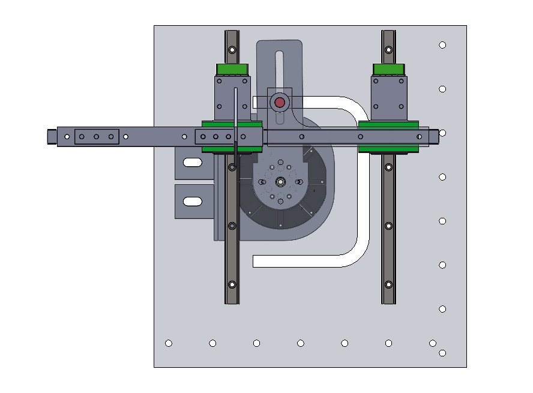
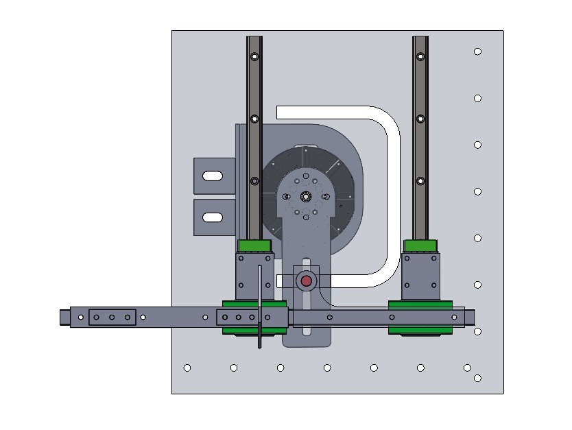
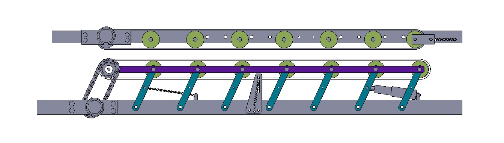
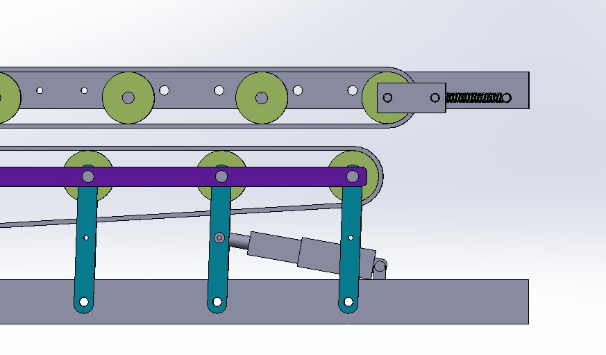
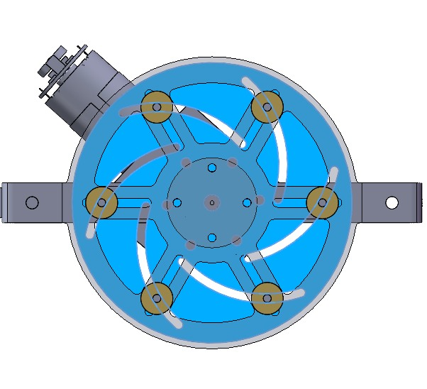
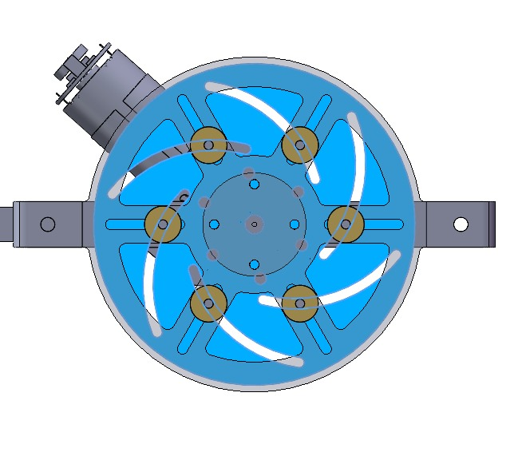

01 / PATH
U形轨迹运动


由曲柄与导轨配合，带动张紧机构沿U形轨迹移动。
用于大葱收割、修剪、清土及橡皮筋打捆装箱的一体化农业机械设备。

SYSTEM OVERVIEW
柔性夹持机构将大葱向上传送，经修剪、清土和换向后，送入打捆模块，完成橡皮筋打捆与装箱。
INNOVATION / FLEXIBLE GRIPPING
通过平行四边形机构改变两侧传送带的间距，适应不同粗细的大葱，并完成夹持与输送。


INNOVATION / DUAL-CAM BUNDLING
U形轨迹机构与橡皮筋张紧机构配合，完成取圈、张紧与释放，再通过闸门将打捆后的大葱送入储存箱。


由曲柄与导轨配合，带动张紧机构沿U形轨迹移动。


凸轮盘驱动六根销轴径向运动，实现橡皮筋的张开与收拢。
一种大葱打捆装箱装置和大葱收获装置
ZL 2024 2 0635573.0SUPPORTING MODULES
通过曲柄滑块机构，在输送过程中修剪过长葱叶。
通过曲柄摇杆机构，清理葱根上的泥土。
利用导向斜坡调整大葱姿态，衔接输送与打捆模块。
承载整机结构与各功能模块，实现整机移动。
CALCULATION & SIMULATION
机构受力计算、关键零件强度校核与有限元分析。
点击图片可放大查看。
建立运动轨迹与受力模型，估算驱动扭矩和功率，为轨迹机构的电机选型提供依据。
考虑极限位置下的堵转工况，计算销轴受力与弯矩，确定危险截面并进行强度校核。
针对推杆连接销轴承担机构重量的工况，分析等效应力分布和局部应力集中。
对张紧销轴到达滑槽极限位置的工况进行仿真，比较不同材料的应变响应，辅助材料选择。
在整机重量分配到轴系的假设下，分析底盘光轴的剪切应力分布，评估承载部位。
以等效载荷模拟橡皮筋压力，分析套筒末端的位移，为结构与运动避让设计提供参考。
BUILT PROTOTYPE
零件加工、整机装配与样机调试。
ENGINEERING DRAWINGS
整机及主要机构装配图
点击图片可放大查看